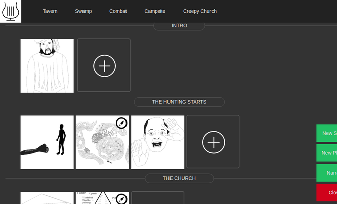
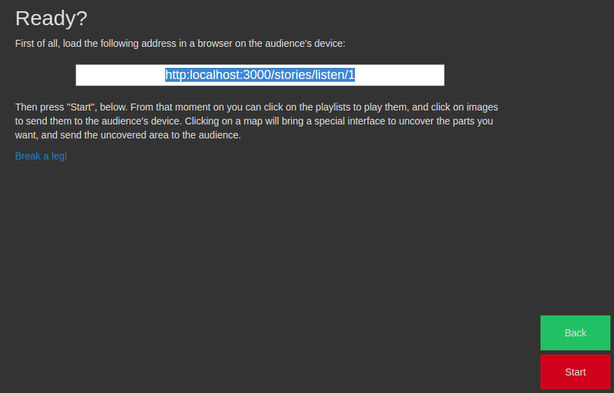
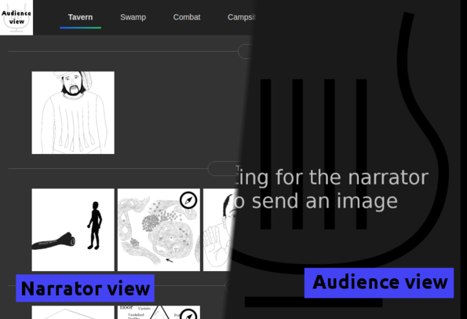
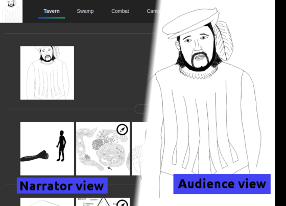
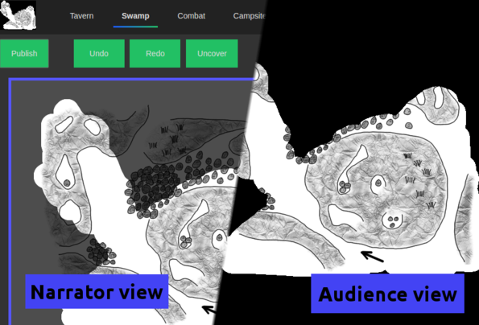

Say that you are a storyteller and you want an easy way to integrate images and music in your story. Especially if you like interactive stories (think "role-playing games"), Lyre can help you do it.
The basic premise is this: first, the narrator uploads the images she wants to show, grouped in scenes, and the audio tracks she wants to play, grouped in playlists. Right before telling the story, the narrator opens Lyre's narration page in her own computer and the audience opens the audience page in another device. As the story is told, the narrator can click on any image and it will be automatically shown on the audience's device. Every time there is a change of mood, the narrator can click on any playlist to change the music (it loops until changed/stopped). Moreover, some images can be marked as being "maps": when clicked, the narrator can uncover bits of it, and send the uncovered parts of the map to the audience. See the detailed example below for more information.
Installing Lyre
Unfortunately you need a server to run Lyre on. You can use your own computer, but you have to know how to make other devices connect to it (eg. find out your IP). Worst case scenario, you can use Lyre to play the music.
Please see Lyre's README file for the instructions.
Example
See this intro+demo video, or read after the video for a text explanation.Let's see how Lyre would be setup and used to run the scenario "The Merchant" (PDF). First, we will identify the images in it: we have the Merchant's drawing, the split-leech drawing, the swamp map, Narre's horrified face, the front drawing of the church, and the church map. We will divide them in three scenes: Intro (first image), The Hunting Starts (following three) and The Church (the other two). After creating the scenes and uploading the images, Lyre looks like this:
Second, the playlists. For this example we can create five playlists: Tavern, Swamp, Combat, Campsite, and Creepy Church. We could for example use the excellent tracks offered in TableTopAudio.com. After creating the playlists, Lyre will look like the image below (notice the playlists at the top):

Now the story is ready to be narrated. Right before starting narration, the narrator loads Lyre in her laptop and clicks on the "Narrate" button. An address is shown on screen, then she grabs a tablet for the players and loads that address. That makes the tablet wait for images from the narrator's laptop, which will be shown as they are received.

With the audience device and the narrator laptop prepared, the story starts. The narrator sees the list of available images and playlists, and sets the mood with some music by clicking on the Tavern playlist:

Shortly after, the narrator describes how Opluk enters the tavern, and clicks on its drawing. The player's tablet immediately shows the picture. Note how the narrator has a miniature view of what the audience sees, in the top-left corner:

Some time later the protagonists enter the swamp. The narrator clicks on the swamp (note that is marked as a map with a special icon) and enters the map uncovering interface. Then, she uncovers what the protagonists see at first, and pushes the "Publish" button on the top-left. The uncovered part of the map can be seen by the audience, but nothing else. The players don't even know how big the whole map is:

The narrator can, at any point, close the map and go back to the main narration screen. She can then show other images (maybe Narre's frightened portrait) and maybe even go back to the map. While the narration lasts, the state of the map will be remembered so the narrator can switch back and forth between uncovering more and more parts of the map, and showing images of people or objects they find.
Map Markers
This video shows how to use map markers to make your maps more useful while narrating.